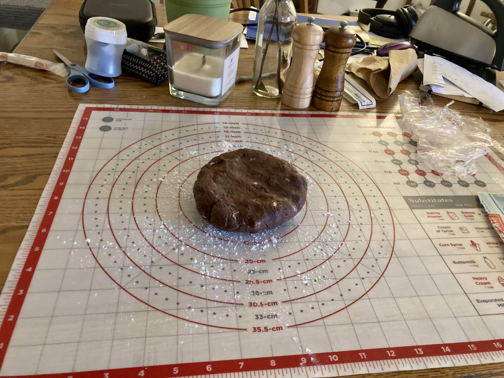
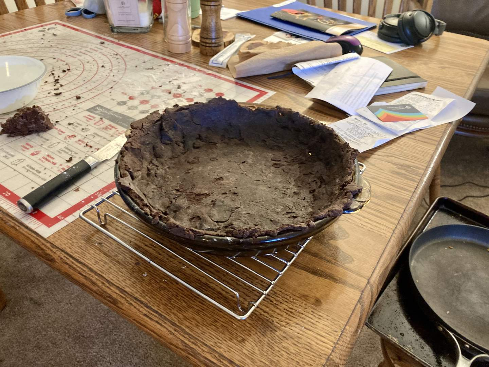
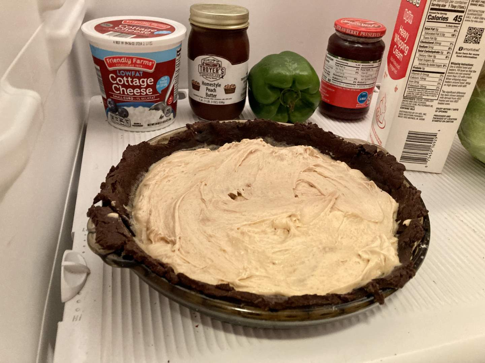
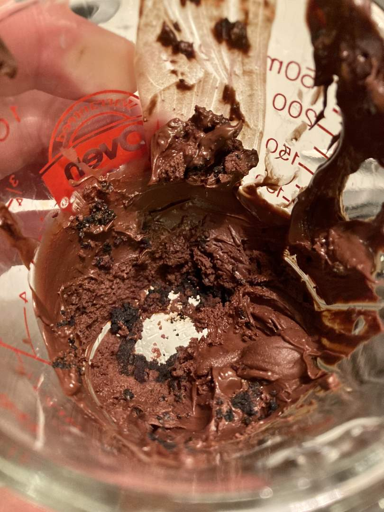
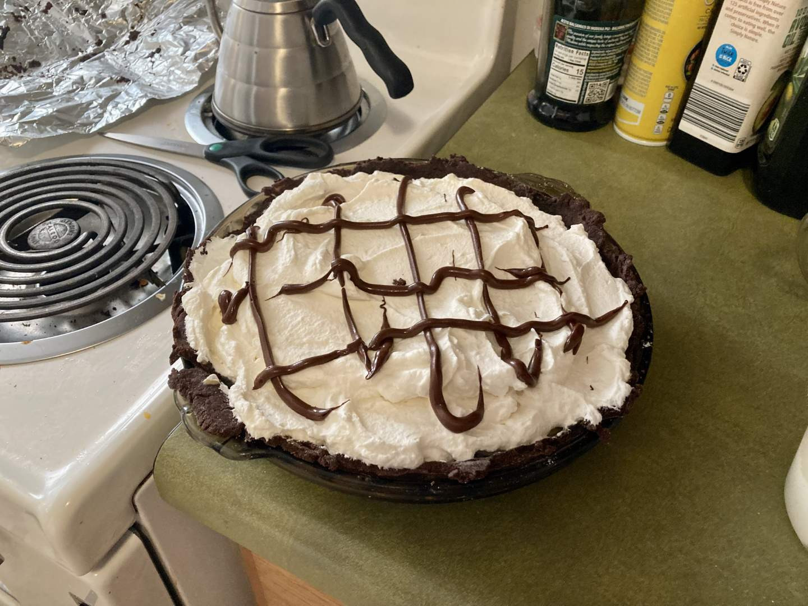
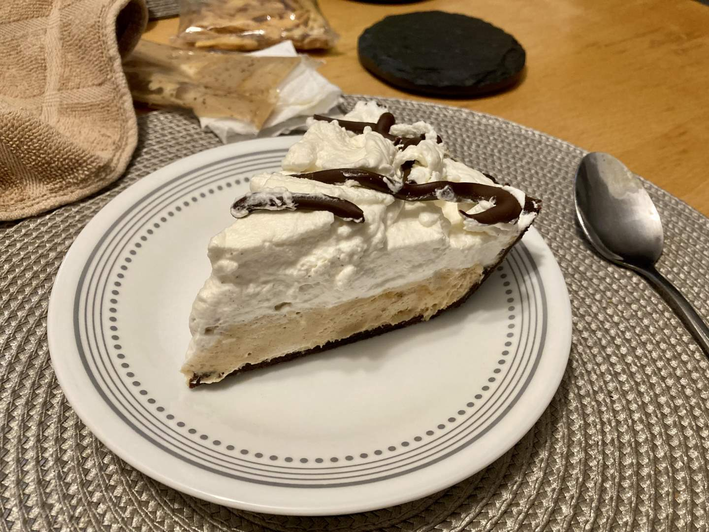

Pie 17: Peanut Butter
2023-10-21Filling recipe from Preppy Kitchen.
Crust recipe from Mama Gourmand.
Taste:
Difficulty:
Vibes:
Suggested pairing: Thai peanut curry, asparagus
I (Ben) have been feeling a bit stretched for pie ideas these last two weeks. The only one that really seems right is a pumpkin pie, and I’m saving that for Thanksgiving time. The grapefruit pie was a spur-of-the-moment idea. If you have any unusual but delish recipes I would be happy for you to send them our way via email or the comment section.
Under these circumstances, it can be nice to have constraints. This pie was made with the intention of sharing it with friends, one of whom is gluten-free. I had wanted to make a traditional pastry crust with GF flour for a while, so I latched on to that idea. Additionally, the gluten-eating friend asked for a chilled chocolate pie (or fruit or peanut butter). Since we made a chilled chocolate pie already and 9 of 16 pies so far have been fruit, peanut butter with a chocolate pastry crust stood out as a keen idea.
I began the crust with a recipe designed for GF flour, hoping this would help sidestep the texture and stability issues that often come up in such concoctions. I think it would have worked except for the wild card: 30-something grams of astringent cocoa powder which I threw in to make a chocolate dough. Rolling out the dough was easy compared with other, more elastic glutinous recipes. On the other hand, the crust did not have structural integrity and developed a rash of holes when I transferred it into the pie dish. I had to seal those up before blind-baking the pie. (Notice how fudgy it looks after baking? I don’t have a good explanation for that.)
While the crust was in the oven I whipped up some heavy cream and then mixed in creamy peanut butter and cream cheese. (A prize is available to the first person to guess the texture of this filling). I spooned the filling into the cooled crust then whipped up some more heavy cream for the top.
Looking to add some decorative flair, I put ¼ cup of semi-sweet chocolate chips in the microwave until the mixture started smoking like a chimney. I took the burnt chocolate outside until the smoke cleared and, with chagrin, asked my wife why it didn’t become pourable. Katie Beth suggested I add a pat of butter (to new chips) and stir often, stopping when they fully melted. I followed her advice and piped the choc over the pie with a plastic baggie.
 One friend labeled the pie “bussin’”, which I consider high praise given the nature of the crust. I recommend the filling recipe highly, paired with as much of that blessed wheaty protein as you and your family can handle.
